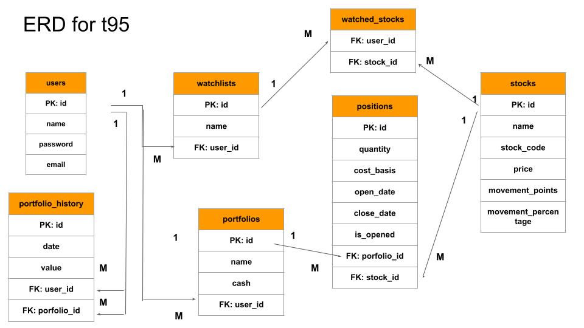

Tech Stack Used In Project T95:
Front-End Tech:
- Angular/HTML/CSS/TypeScript
- Responsive Web Design (RWD)
- Modular Architecture
- Jasmine Unit Tests
- Websockets
- Rxjs
- Routes Authentication Gaurds
- JWT Interceptors
- Directives
- Lazy Loading
- JWT token and Sessions
- Ngx-Chart
- String Validation Utils
- Two-way Property and Event Binding
Back-End Tech:
- Java/Spring Boot
- STOMP Websockets Protocol
- J-Unit tests / Mockito
- MVC Architecture
- JWT Authentication
- Scheduled Executors
- SHA-256
- JPA
- PostgreSQL
- RESTful API
Other Tech:
- Github Actions / CICD
- AWS S3
- AWS RDS
- AWS Elastic Beanstalk
- Connect to AWS Linux instances using SSH
- Swagger
T95 Swagger
API Link
- ERD
